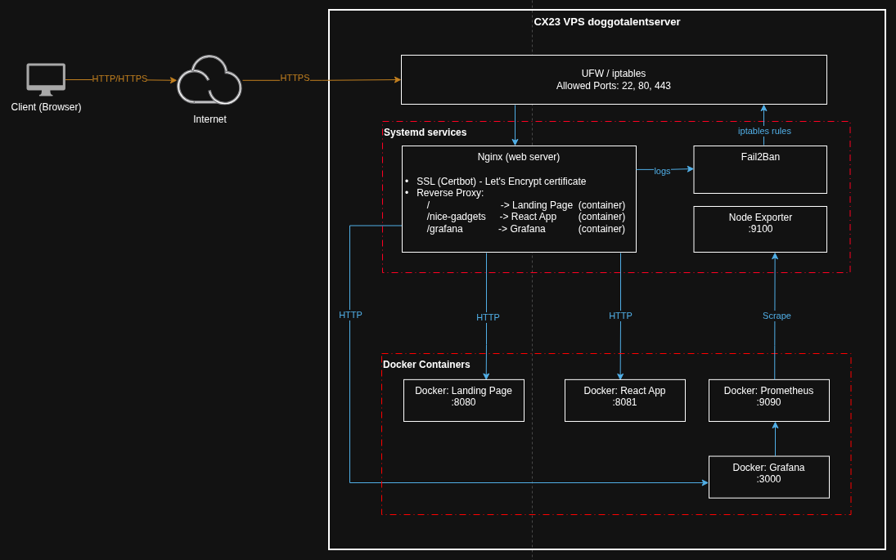

Designing and maintaining reliable Linux infrastructure with observability, automation and security
Hands-on experience designing and operating Linux-based infrastructure.
Built a full monitoring stack with Prometheus and Grafana, deployed containerized services with Docker,
and implemented secure reverse proxy architecture with Nginx.
Focused on reliability, observability and automation rather than just deployment.

Ubuntu 24.04.4 LTS server with hardened security configuration (UFW, Fail2Ban). Managed via SSH with key-based authentication.
SSL/TLS termination with Let's Encrypt certificates. Routes traffic to Docker containers based on domain/subdomain configuration.
Docker Compose orchestration for Grafana (visualization), Prometheus (metrics collection), and web applications. Internal Docker network for service communication.
Prometheus scrapes metrics from Node Exporter and application endpoints. Grafana dashboards provide real-time system and application monitoring.
Complete infrastructure deployment with containerized monitoring solution. Reduced attack surface with firewall rules and Fail2Ban, implemented automated encrypted backups to ensure data safety
Deployed React-based eCommerce application with Nginx reverse proxy. Integrated Supabase backend and resolved complex networking issues.
Implemented automated backup solution using cron jobs and systemd timers. Configured off-site backup storage with encryption.
Production infrastructure is continuously monitored using Prometheus and Grafana. Metrics include CPU usage, memory consumption, disk I/O and network traffic.
SysAdmin • SRE • DevOps — Open for work.